LYON 1
LA DOUA EN LUTTE
Guide des
modérateur·rices
Tout ce qu’il faut savoir pour faire vivre le site pendant la mobilisation : comment faire, ce qu’il faut faire, et surtout ce qu’il ne faut jamais faire.
BâtimentsAG & manifsVotesComptes rendusTémoignagesChatStoriesSécurité
Sommaire
01Ton rôle en 1 page
02Ton compte et ta sécurité
03Ton site de travail et tes droits
04Bâtiments bloqués (le plus important)
05Le titre de l’accueil
06Travailler à plusieurs sans s’écraser
07Flash infos et alertes urgentes
08AG, manifs, rassemblements
09Comptes rendus d’AG (PDF + IA)
10Votes anonymes, liens et résultats
11Revendications
12Blog et tribunes
13Témoignages de violences
14Modérer le chat anonyme
15Images pour Instagram
16Ce qui part quand tu publies
17À faire / à ne jamais faire
18En cas de problème
19Pour l’admin
20Check-lists du jour
La règle d’or : une info fausse fait plus de dégâts qu’une info en retard. Tu publies ce que tu as vu ou ce qui t’a été confirmé par une personne sur place.
Comment lire ce guideChaque fiche explique comment faire, montre l’écran, puis liste ce qu’il faut faire (vert) et ce qu’il ne faut jamais faire (rouge). Les fiches 02, 13 et 17 sont à lire en priorité.
01Ton rôle en 1 page
Le site remplace les infos que la présidence n’envoie plus. Des milliers d’étudiant·es comptent dessus pour savoir s’il y a cours, où aller, quoi voter. Toi, tu es la source fiable.
Tes missions
- Tenir les bâtiments à jour, dès le matin et à chaque changement : c’est ce que les gens regardent en premier.
- Annoncer les AG, manifs et rassemblements de ton site, avec lieu et heure exacts.
- Publier les comptes rendus d’AG en flash infos, après relecture.
- Lancer les votes décidés par ton AG et partager leur lien.
- Relire avant publication les témoignages et tribunes envoyés anonymement.
- Garder le chat respirable : masquer ce qui met des gens en danger ou les insulte.
- Faire connaître le site avec les images prêtes à publier.
✅ L’espritRapide, exact, neutre dans la forme. Le site informe : les débats ont lieu en AG.
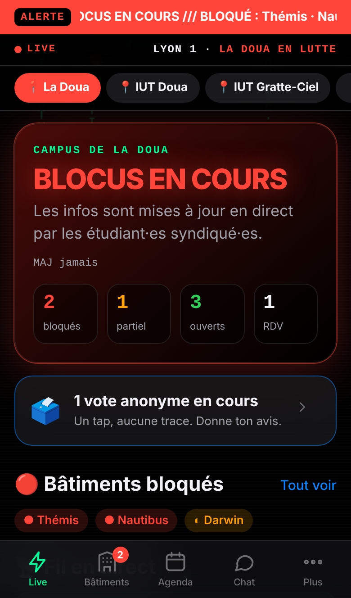
L’accueil vu par les étudiant·es
Ce que tu n’es pas
- Pas un·e porte-parole : tu publies ce qui a été décidé collectivement, pas ton avis personnel.
- Pas un·e journaliste d’investigation : tu ne publies ni rumeurs, ni accusations nominatives.
- Pas seul·e : d’autres modos travaillent en même temps. Le site vous empêche de vous écraser, mais parlez-vous.
02Ton compte et ta sécurité
Te connecter
- Va sur le site, menu Plus → Espace modos (ou ajoute /#/modo à l’adresse).
- Entre l’identifiant et le mot de passe reçus de l’admin.
- Change tout de suite le mot de passe : onglet 🔑 Mon compte, 10 caractères minimum.
Ta session reste ouverte 14 jours sur ce téléphone. Sur un ordinateur partagé, clique toujours sur Se déconnecter.
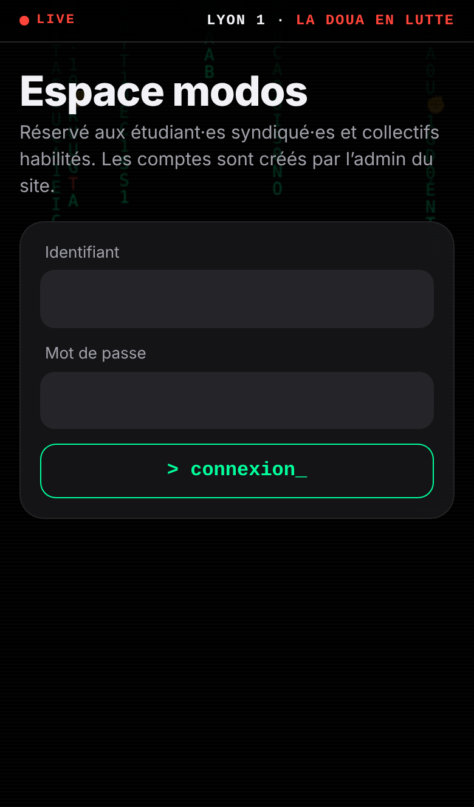
Écran de connexion
✅ À faire
- Un mot de passe long et unique (une phrase de 4 mots, par exemple).
- Un code de verrouillage sur ton téléphone.
- Recevoir ton mot de passe en main propre ou par Signal.
- Prévenir l’admin tout de suite si tu perds ton téléphone.
⛔ À ne jamais faire
- Prêter ton compte, même « juste 5 minutes ».
- Envoyer un mot de passe par Instagram, Messenger, SMS ou email.
- Faire une capture d’écran de l’espace modo et la poster.
- Te connecter sur un ordinateur de la fac ou d’une bibliothèque.
💡 Pourquoi c’est importantChaque action est enregistrée au nom de ton compte (journal). Si quelqu’un l’utilise pour publier une fausse info ou un nom, c’est ton nom qui apparaît. Et un compte volé peut servir à piéger les étudiant·es (faux lieu de rendez-vous).
03Ton site de travail et tes droits
Le site couvre plusieurs lieux : Campus de la Doua (affiché par défaut), IUT Doua, IUT Gratte-Ciel, Rockefeller, Lyon Sud, Gerland… Chaque AG gère son site.
- En haut de l’espace modo, la ligne « Tu agis sur : 📍… » montre tes sites. Celui en rouge est ton site de travail : tout ce que tu fais s’applique à lui.
- Tu ne vois et ne modifies que tes sites. Si tu essaies de toucher un autre site, le site refuse avec « Tu n’as pas les droits ».
- Seul·e l’admin a accès à tout, aux comptes et à la liste des sites.
- Le nom de ton compte (ex. « AG Doua », « AG IUT Gratte-Ciel ») est affiché publiquement sur ce que tu publies.
💡 Vérifie ton site avant de publierSi tu gères deux sites, regarde quel bouton est en rouge avant de bloquer un bâtiment ou de lancer un vote.
⛔Ne demande pas l’accès à un site qui n’est pas le tien « pour aider » : propose plutôt à son AG de te le confier officiellement via l’admin.
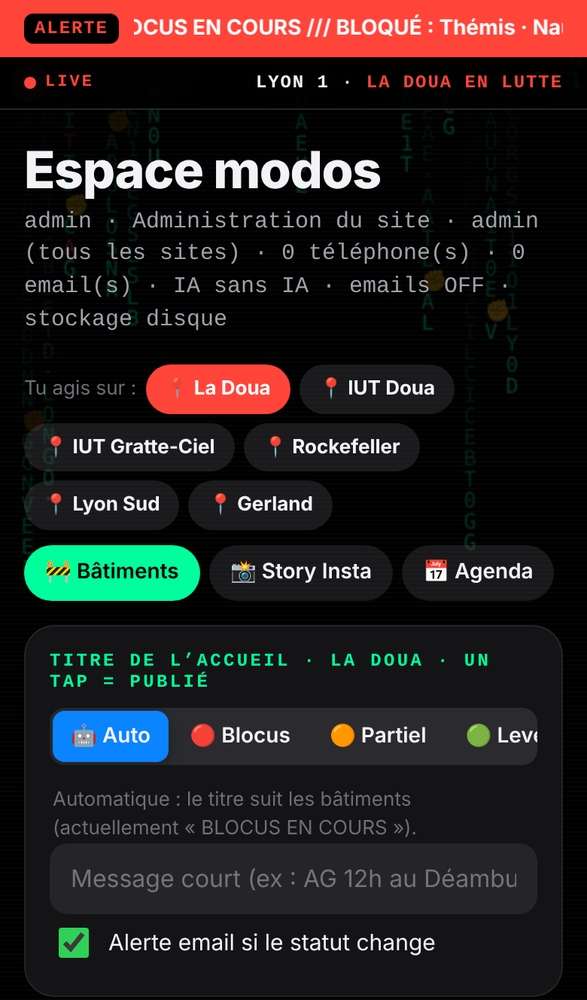
En haut : tes sites, puis les onglets
04Bâtiments bloqués (le plus important)
Onglet 🚧 Bâtiments. Trois façons de faire, de la plus rapide à la plus précise. Un changement est visible tout de suite par tout le monde.
1. La saisie éclair (écrire ou dicter)
Écris comme tu parles, ou appuie sur 🎙️ et dicte :
- « Thémis, Nautibus bloqués. Darwin partiel. Le reste ouvert. »
- « Toute la Doua bloquée » · « Lippmann débloqué » · « Tout est ouvert »
Sous le texte, l’aperçu en couleur montre exactement ce qui va changer : 🔴 bloqué 🟠 partiel 🟢 ouvert. Les fautes et surnoms (« Déambu ») sont compris ; un mot inconnu s’affiche en orange.
Vérifie l’aperçu, puis « Appliquer ».
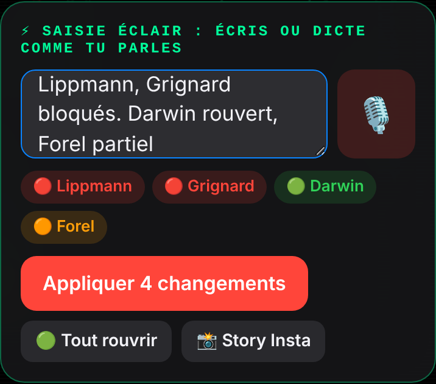
L’aperçu avant d’appliquer
2. Toucher les tuiles
- Touche un ou plusieurs bâtiments (une coche verte apparaît). « Tout » sélectionne le campus entier.
- Choisis 🔴 Bloqué, 🟠 Partiel ou 🟢 Ouvert dans la barre du bas.
Appui long sur une tuile : ajouter une note visible par tous (« entrée côté tram ouverte »), renommer ou supprimer.
3. Reprendre l’AG
Le bouton 📋 Reprendre l’AG remplit la saisie avec les bâtiments votés dans le dernier compte rendu publié.
Te tromper n’est pas grave
Après chaque envoi, ↩️ Annuler reste affiché 10 secondes. Annuler retire aussi l’alerte en attente : aucune fausse notification ne part. Les alertes sont regroupées pendant 1 minute.
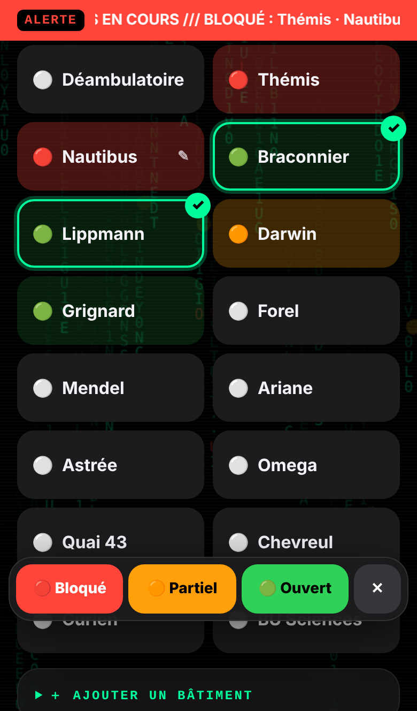
Sélection multiple + barre d’action
✅ À faire
- Mettre à jour dès le matin (avant 7 h 30 si possible) et à chaque changement réel.
- Ne passer en 🔴 que ce que tu as vu ou ce qu’une personne sur place t’a confirmé.
- Utiliser 🟠 Partiel quand une entrée reste ouverte, avec une note.
- Rouvrir (🟢) en fin de blocage : les étudiant·es comptent aussi sur cette info.
⛔ À ne jamais faire
- Annoncer un blocage « prévu » comme s’il était en cours.
- Mettre des infos tactiques dans les notes (nombre de personnes au piquet, points faibles, matériel).
- Laisser des bâtiments 🔴 la nuit ou le week-end s’ils ont été rouverts.
- Supprimer un bâtiment pour « le cacher » : passe-le en 🟢 ou laisse « ? ».
05Le titre de l’accueil
En haut de l’onglet Bâtiments : « Titre de l’accueil » de ton site.
| Bouton | Effet |
|---|
| 🤖 Auto (conseillé) | Le titre suit les bâtiments : « BLOCUS EN COURS » dès qu’un bâtiment est 🔴, « PARTIEL », puis « PAS DE BLOCUS » quand tout est rouvert. |
| 🔴 Blocus / 🟠 Partiel / 🟢 Levé | Tu forces le titre à la main (ex. jour d’AG sans bâtiment bloqué). Il ne bouge plus tout seul jusqu’à ce que tu remettes « Auto ». |
Le message court sous le titre (ex. « AG 12 h au Déambu, piquet dès 7 h ») s’affiche en gros sur l’accueil.
💡Laisse « Auto » sauf vraie raison. Un titre forcé et oublié finit par mentir.
⛔Ne coche pas « Alerte » si le changement est mineur : chaque changement de titre peut envoyer une notification à tous les abonné·es du site.
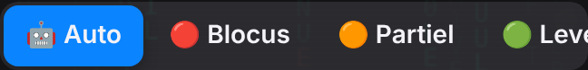
Choix du titre
06Travailler à plusieurs sans s’écraser
Plusieurs modos peuvent gérer le même site. Le site protège votre travail, mais il faut s’organiser.
- Qui est là ? Le bandeau orange « 👥 Aussi connecté·e en ce moment : … » montre les autres modos actifs sur tes sites.
- Bâtiments : si un·e autre modo a changé un bâtiment depuis que ta page est ouverte, ton changement sur ce bâtiment n’est pas appliqué ; tu vois « ⚠️ Déjà changé par … » et la tuile se met à jour. Vérifie avant de recommencer.
- Fiches (AG, revendications, comptes rendus, témoignages) : si quelqu’un l’a modifiée entre-temps, tu vois « Modifié entre-temps par … » et la page se recharge. Rien n’est écrasé.
- Journal (onglet 📜) : qui a fait quoi, quand, sur quel site.
✅ À faire
- Se répartir les rôles dans votre groupe : 1 personne « bâtiments » le matin, 1 « comptes rendus » après l’AG, etc.
- Prévenir votre groupe quand tu prends une tâche (« je fais le CR »).
- Si tu vois un conflit, lire ce que l’autre a fait avant de corriger.
⛔ À ne jamais faire
- Annuler ou corriger le travail d’un·e autre modo sans lui en parler (sauf erreur évidente et urgente).
- Se battre à coups de modifications : réglez-le en dehors du site.
07Flash infos et alertes urgentes
Onglet ⚡ Flash : un message court affiché en haut de l’accueil et dans le fil en direct.
| Niveau | Quand | Effet |
|---|
| ℹ️ Info | Rappel, changement de salle, info pratique. | Accueil + fil. |
| ✅ Bonne nouvelle | Revendication obtenue, réouverture. | Accueil + fil. |
| 🚨 Alerte | Danger réel et immédiat : nasse, charge, zone à éviter, annulation de dernière minute. | Accueil + fil + notification immédiate + Telegram. |
⛔ L’alerte 🚨 n’est pas un mégaphoneSi elle sert pour tout, plus personne ne la lit. Une alerte = un danger ou une urgence vérifiés. Jamais pour « venez nombreux ».
✅ Une bonne alerte« Nasse en cours place Bellecour, évitez le secteur, dispersion par la rue de la Barre. » Lieu précis, consigne claire, pas de nom.
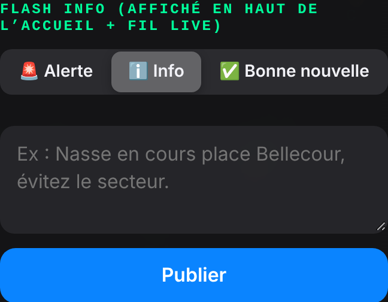
Choix du niveau
08AG, manifs, rassemblements
- Onglet 📅 Agenda : type, date et heure, titre, lieu, adresse (pour l’itinéraire), infos.
- Coche « Alerter les abonné·es » pour une AG ou une manif importante.
- Modifier : ✏️ dans la liste. Supprimer : 🗑️ (en cas d’annulation, préfère modifier le titre : « ANNULÉ — … »).
Les étudiant·es peuvent ajouter l’événement à leur calendrier, ouvrir l’itinéraire et le partager.
✅- Heure et lieu confirmés.
- Une adresse précise pour le point de départ d’une manif déclarée.
- Prévenir vite en cas de changement.
⛔- Publier une action non décidée collectivement.
- Publier le détail d’une action qui doit rester discrète : le site est public.
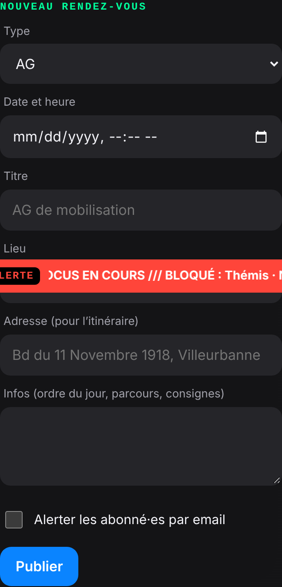
Nouveau rendez-vous
09Comptes rendus d’AG (PDF + IA)
- Onglet 🤖 CR + IA → Choisir un PDF (même scanné ou manuscrit).
- Le terminal montre l’IA qui lit le document en direct. Elle doit retirer les noms des personnes.
- Un brouillon s’ouvre : titre, date, résumé, flash infos, votes, rendez-vous, revendications.
- Relis tout, corrige, retire ce qui ne doit pas être public.
- Options : ajouter les rendez-vous datés à l’agenda, ajouter les revendications, envoyer le résumé aux abonné·es.
- Publier.
⛔ L’IA peut se tromper
- Elle peut oublier un nom, inventer un chiffre ou mal comprendre un vote.
- Rien n’est publié sans ta relecture : c’est toi qui es responsable de ce qui sort.
- Ne publie jamais : noms, prénoms, numéros de téléphone, descriptions physiques, nombre exact de personnes à un piquet.
💡 ConfidentialitéAvec la version gratuite de Gemini, Google peut conserver les documents envoyés. Si possible, envoie un PDF déjà anonymisé (noms remplacés par « un·e étudiant·e »).
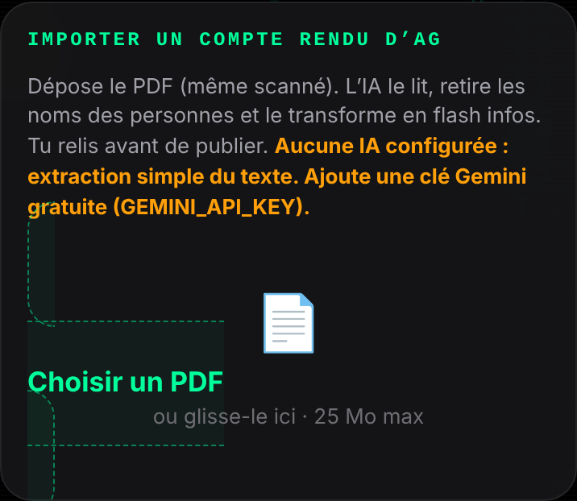
Importer un compte rendu
10Votes anonymes, liens et résultats
Lancer un vote
- Onglet 🗳️ Votes : nom de l’AG qui organise (« AG du 18/11 · Doua »), question, choix (un par ligne), durée.
- Résultats visibles pendant le vote, ou seulement à la clôture (pour ne pas influencer).
- Lancer le vote : il apparaît sur la page Votes de ton site et sur Telegram.
Le partager
- 🔗 Lien copie le lien direct du vote : colle-le dans un sticker « Lien » de ta story Instagram.
- 📸 Story du vote : image prête avec la question, les choix, un QR code et une zone en pointillés pour le sticker.
- 📊 Story résultats : dès qu’il y a des votes ; à la clôture, l’image montre le choix gagnant.
À la fin du vote, les résultats sont publiés automatiquement dans le fil en direct et sur Telegram.
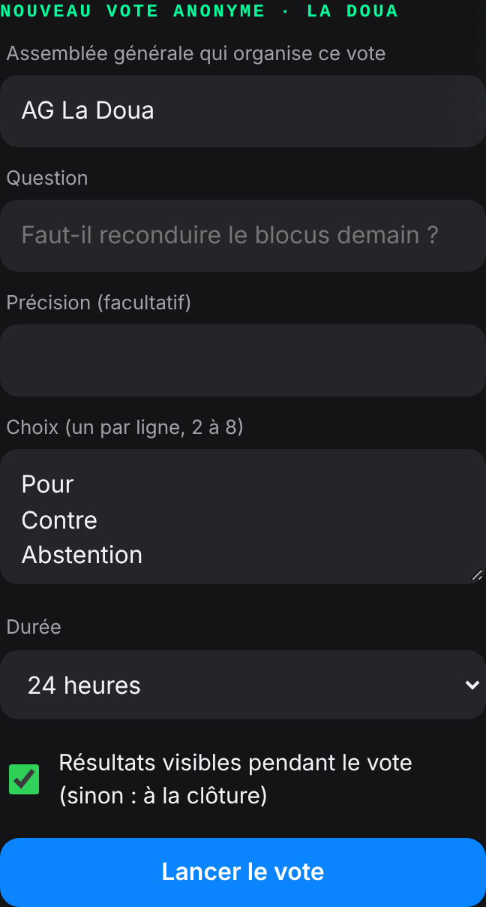
Nouveau vote
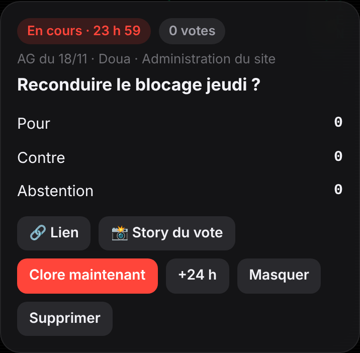
Lien, story, résultats
✅ À faire
- Rappeler que le vote est indicatif : les décisions se prennent en AG.
- Des questions courtes et neutres, avec « Abstention ».
- Une durée adaptée : 3 à 12 h pour une décision du lendemain.
⛔ À ne jamais faire
- Présenter un vote en ligne comme une décision d’AG.
- Voter plusieurs fois (vider ses cookies) ou demander à d’autres de le faire.
- Poser une question orientée (« Êtes-vous d’accord pour soutenir la lutte ? »).
11Revendications
- Onglet ✊ Revendications : ajouter (titre court, catégorie, explication), changer le statut (En lutte Obtenu Refusé), supprimer.
- Le texte « Le contexte » en haut de la page se modifie dans le même onglet.
- Les étudiant·es peuvent soutenir chaque revendication d’un tap, anonymement.
✅- Recopier fidèlement ce qui a été voté en AG ou adopté dans un communiqué.
- Passer en « Obtenu » quand c’est gagné : c’est motivant pour tout le monde.
⛔- Ajouter une revendication personnelle non votée.
- Nommer une personne (enseignant·e, responsable) même si elle est mise en cause : risque de diffamation et de mise en danger.
12Blog et tribunes
- Articles : écrits par les modos (onglet ✍️ Blog), signés du nom de l’organisation.
- Tribunes : envoyées anonymement par les étudiant·es ; elles arrivent dans « Tribunes à relire ». Rien n’est publié sans validation.
✅ Tu peux publier- Témoignages de vécu, analyses, appels à la mobilisation.
- Désaccords argumentés, même avec la ligne majoritaire.
⛔ Tu refuses- Noms de personnes privées, insultes, appels à la haine ou à la violence contre des personnes.
- Accusations nominatives non jugées, informations personnelles (adresse, téléphone).
13Témoignages de violences
La partie la plus sensible. Des personnes te confient ce qu’elles ont subi, parfois avec des photos et vidéos. Une erreur peut exposer une victime, un·e témoin ou un·e manifestant·e.
La procédure, à chaque témoignage
- Lis en entier. Si le récit n’est pas plausible ou ressemble à une provocation, Refuser.
- Anonymise le texte (il est modifiable) : retire noms, prénoms, surnoms, filière + année + groupe, descriptions physiques, plaques, numéros de matricule.
- Regarde chaque photo et vidéo : visages reconnaissables, tatouages, vêtements distinctifs, plaques ? Décoche « publier » sous le média concerné, ou publie le texte seul.
- Vérifie « ✓ métadonnées retirées » sous chaque média (position GPS, modèle de téléphone).
- Laisse « Flouter les médias » coché.
- Contact privé : s’il y en a un, transmets-le à la legal team ou à l’orga d’accompagnement, puis Effacer.
- Publier, ou Supprimer définitivement si le témoignage met quelqu’un en danger.
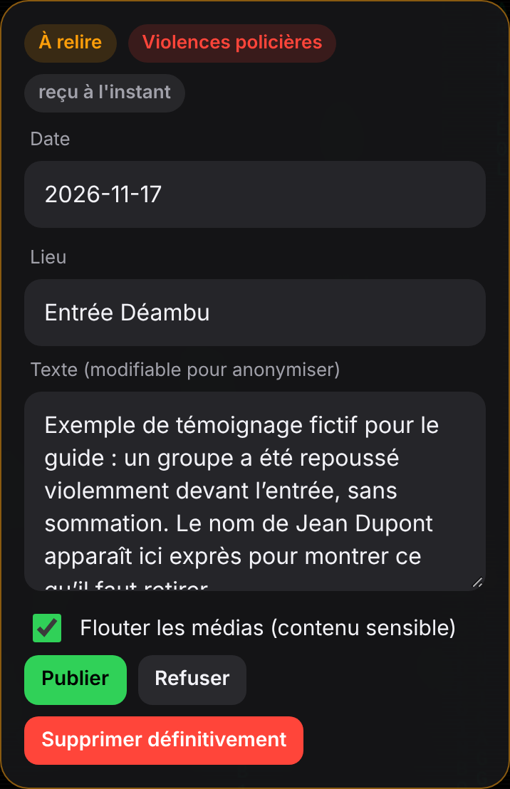
Relecture d’un témoignage (ici, un nom fictif à retirer)
✅ À faire
- Orienter la personne vers l’accompagnement juridique et médical (contacts, Défenseur des droits).
- Rappeler de garder les fichiers originaux pour une plainte.
- Demander à un·e 2e modo de relire en cas de doute.
⛔ À ne jamais faire
- Publier un visage reconnaissable d’un·e manifestant·e, d’un·e passant·e ou d’un·e victime.
- Désigner nommément un agent, une personne ou un groupe.
- Télécharger les médias sur ton téléphone perso ou les transférer en dehors du site.
- Recontacter la personne avec ton compte perso.
14Modérer le chat anonyme
Onglet 🛡️ Chat : les messages signalés par les étudiant·es (masqués automatiquement après 3 signalements). Tu peux Masquer ou Rétablir. Quand tu écris dans le chat avec ton compte connecté, ton message porte le badge de ton organisation.
| Tu masques | Tu laisses |
|---|
Noms, photos, adresses, numéros (« doxxing »), même « pour rire ».
Insultes, harcèlement, propos racistes, sexistes, LGBTphobes, validistes.
Menaces, appels à la violence contre des personnes.
Fausses infos dangereuses (faux lieu de rendez-vous, fausse annulation).
Spam, publicité. | Les critiques de la mobilisation, des syndicats ou des modos, si elles restent correctes.
Les questions « bêtes » : réponds-y.
Les désaccords vifs mais sans attaque personnelle. |
⛔Ne masque pas un message parce que tu n’es pas d’accord. Le chat est un espace de discussion, pas un fil de propagande.
💡Une fausse info dans le chat ? Plutôt que masquer, réponds avec le lien vers l’info officielle du site (Bâtiments, Agenda) : tout le monde voit la correction.
15Images pour Instagram
Onglet 📸 Story Insta. Toutes les images sont dessinées par ton téléphone, sans IA ni service extérieur, avec les infos à jour :
- Promo : story et publication pour faire connaître le site (QR code + adresse).
- Tuto notifs : carrousel de 4 images « installer l’app + activer les notifications » (iPhone et Android).
- Statut du site, prochain RDV, dernier compte rendu.
- Vote en cours (avec zone pour le sticker lien) et résultats.
Partager ouvre directement Instagram sur téléphone ; sinon Télécharger. Pour un vote : publie la story, ajoute le sticker Lien avec le lien copié, place-le sur la zone en pointillés.
⛔Ne modifie pas les images avec des filtres qui masquent l’adresse ou le QR code. Ne publie pas de photo de manifestant·es reconnaissables à côté.
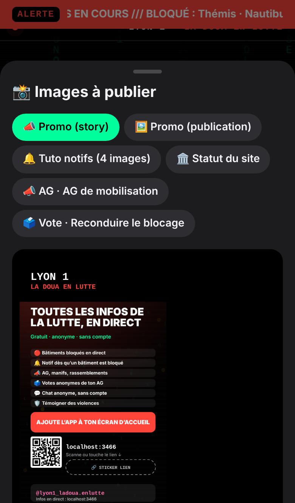
Le générateur d’images
16Ce qui part quand tu publies
Certaines actions préviennent des centaines de personnes. Sache ce que tu déclenches.
| Action | Fil en direct | Notification téléphone | Telegram | Email |
|---|
| Bâtiment 🔴/🟠/🟢 | Oui | Oui, abonné·es du site (regroupé 1 min) | Oui | Récap du matin |
| Titre de l’accueil changé (case « alerte » cochée) | Oui | Oui | Oui | Récap du matin |
| Flash 🚨 Alerte | Oui | Oui, immédiat | Oui | Récap du matin |
| Flash Info / Bonne nouvelle | Oui | Non | Non | Non |
| AG / manif avec « alerter » | Oui | Oui | Oui | Récap du matin |
| Compte rendu publié avec « envoyer » | Oui | Oui | Oui | Récap du matin |
| Vote lancé | Oui | Non | Oui | Non |
| Vote terminé | Résultats auto | Non | Résultats auto | Non |
Le récap du matinLes emails gratuits sont limités (environ 300 par jour) : chaque abonné·e reçoit un seul email vers 7 h avec les bâtiments bloqués, les rendez-vous du jour et les alertes de la veille. Pour être prévenu·e en temps réel : l’app et ses notifications, ou Telegram.
17À faire / à ne jamais faire
✅ À FAIRE
- Vérifier avant de publier : vu par toi ou confirmé par quelqu’un sur place.
- Publier vite ce qui est utile : bâtiments, lieu de l’AG, changement d’horaire.
- Corriger tout de suite une erreur (Annuler, modifier, ou flash « Correction : … »).
- Remettre en 🟢 / « Auto » quand la situation change.
- Relire tout ce que l’IA produit.
- Anonymiser tout ce qui vient des étudiant·es.
- Orienter vers les contacts (legal team, écoute, Défenseur des droits).
- Se coordonner avec les autres modos du site.
- Rester factuel·le et lisible : phrases courtes, heures et lieux précis.
- Te déconnecter sur un appareil partagé.
⛔ À NE JAMAIS FAIRE
- Publier un nom, un visage reconnaissable, une adresse, un numéro.
- Accuser nommément une personne (enseignant·e, agent, étudiant·e).
- Publier des rumeurs ou des infos non confirmées.
- Publier des détails tactiques : le site est public, tout le monde peut le lire, y compris l’administration et la police.
- Appeler à la violence contre des personnes, ou publier des propos haineux.
- Utiliser l’alerte 🚨 pour autre chose qu’un danger réel.
- Présenter un vote en ligne comme une décision d’AG.
- Prêter ton compte ou envoyer ton mot de passe en clair.
- Toucher au site d’une autre AG sans accord.
- Garder ou transférer les médias des témoignages.
⚖️ Le cadre légal, en brefLe site est public. Ce qui y est publié engage ses responsables : la diffamation (accuser quelqu’un nommément sans décision de justice), l’incitation à la violence ou à la haine et la publication de données personnelles sont punies par la loi. Un contenu illicite signalé doit être retiré rapidement. Les règles de ce guide te protègent, et protègent les étudiant·es.
18En cas de problème
| Problème | Que faire |
|---|
| J’ai publié une erreur | Bâtiments : Annuler (10 s), sinon corrige. Ailleurs : modifie, ou supprime puis republie. Si une alerte est partie : flash Info « Correction : … ». |
| J’ai publié un nom ou une photo par erreur | Dépublie / supprime immédiatement, puis préviens l’admin : il faudra peut-être prévenir la personne concernée. |
| « Tu n’as pas les droits sur… » | Tu n’es pas sur le bon site de travail (vérifie le bouton rouge en haut), ou ce site n’est pas le tien : demande à l’admin. |
| « Déjà changé par… » / « Modifié entre-temps par… » | Un·e autre modo est passé·e avant toi. Regarde ce qui a été fait, parlez-vous, puis recommence si besoin. |
| J’ai perdu mon téléphone / mon compte est peut-être volé | Préviens l’admin tout de suite : il génère un nouveau mot de passe, ce qui déconnecte immédiatement l’ancien téléphone. |
| Le site ne répond pas | Attends 1 minute (l’hébergement gratuit peut redémarrer) puis recharge. Si ça dure, préviens l’admin et publie l’info sur Telegram / Instagram. |
| L’IA refuse ou se trompe sur un compte rendu | Une autre IA prend le relais automatiquement. Sinon, corrige le brouillon à la main : tout est modifiable. |
19Pour l’admin
- 👥 Comptes : un compte par personne (jamais partagé), avec le nom affiché (« AG Doua · Solidaires ») et les sites autorisés. Le mot de passe s’affiche une seule fois : transmets-le par Signal.
- Modifier un compte : changer ses sites ou son nom. Nouveau mdp : déconnecte la personne partout. Désactiver : quand quelqu’un quitte l’équipe.
- 📍 Sites : ajouter un site (IUT, antenne…), le renommer, lui donner sa propre chaîne Telegram.
- 📜 Journal : tout ce qui a été fait, par qui, sur quel site.
⛔Ne donne pas le rôle admin « par confiance » : 1 ou 2 admins suffisent. Un modo n’a besoin que de ses sites.
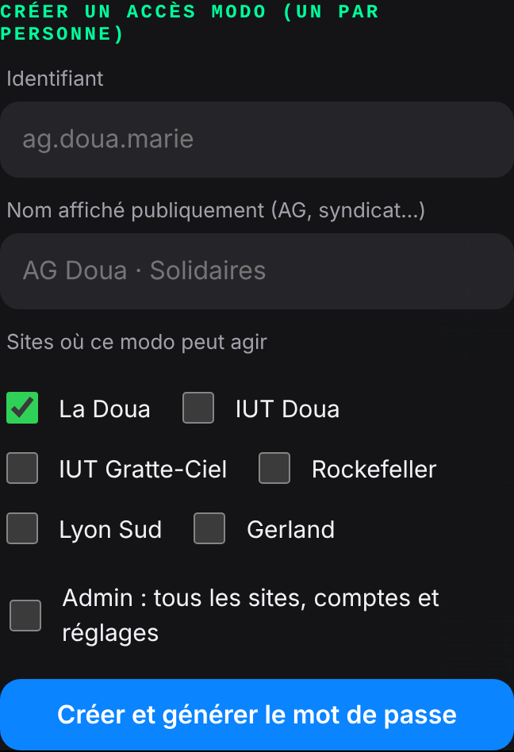
Créer un accès modo
20Check-lists du jour
☀️ Le matin (avant 7 h 30)
- Je vérifie mon site de travail (bouton rouge en haut).
- Je mets à jour les bâtiments avec ce qui est confirmé sur place.
- Je vérifie le titre de l’accueil (« Auto » de préférence) et le message court.
- J’annonce ou je rappelle l’AG du jour (Agenda).
- Je publie une story « Statut du site ».
📣 Pendant une manif
- Je garde le chat sous les yeux (signalements).
- Je n’utilise 🚨 que pour un danger réel et vérifié.
- Je ne publie aucun détail tactique.
🗳️ Après une AG
- J’importe le compte rendu, je le relis, je l’anonymise, je publie.
- J’ajoute les rendez-vous et revendications votés.
- Je lance le vote décidé en AG, je partage son lien en story.
- À la clôture, je publie la story des résultats.
🌙 Le soir
- Je rouvre (🟢) les bâtiments débloqués.
- Je relis les témoignages et tribunes en attente.
- Je me déconnecte si j’étais sur un appareil partagé.
Vérifier · publier vite · anonymiser · ne jamais exposer personne.
Guide des modos · Lyon 1 · La Doua en lutte · document interne, à ne pas diffuser publiquement.